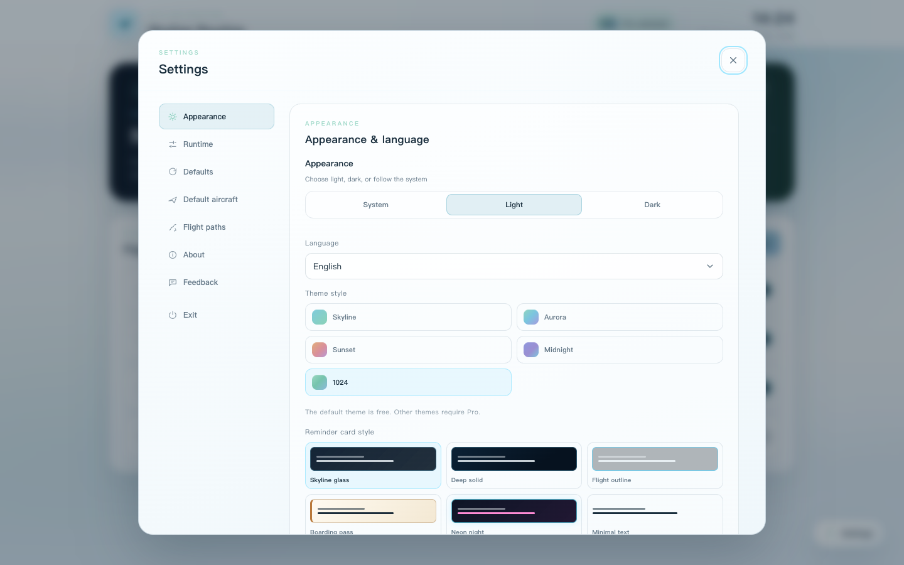

DESKTOP FLIGHT REMINDERS
A reminder that
actually gets noticed.
Skyline Routine does not disappear after a few seconds. When a reminder is due, a plane takes off and keeps cruising until you click it or the reminder text. You can also set a maximum flight time so it lands automatically when you are away.
What it is for
- Drinking water, standing up, and screen breaks
- Medicine, meetings, appointments, and leaving work
- Pomodoro, stretching, meditation, and eye rest
- Any routine that should be seen and acknowledged
What makes it different
A normal notification vanishes in seconds. Skyline Routine uses a persistent plane flight to make the reminder impossible to ignore. Click the plane or the reminder text to end the flight.
Features
- Daily, weekdays, once, and interval reminders
- 12 aircraft styles and custom images
- 6 reminder card styles, with per-reminder overrides
- Draw and reuse custom flight paths
- Pro themes: Aurora, Sunset, Midnight, 1024
- Multiple languages, light/dark mode, auto-landing
Local by design
No account and no cloud upload. Reminder data and custom images stay on your computer. Available for Windows 10/11 x64.

Copyable links
Chinese introduction
https://runningswiftui-creator.github.io/skyline-routine-site/zh.html
English introduction
https://runningswiftui-creator.github.io/skyline-routine-site/en.html
Product website
https://runningswiftui-creator.github.io/skyline-routine-site/
Chinese user guide PDF
https://runningswiftui-creator.github.io/skyline-routine-site/downloads/Skyline-Routine-User-Guide-zh-CN.pdf
English user guide PDF
https://runningswiftui-creator.github.io/skyline-routine-site/downloads/Skyline-Routine-User-Guide-en-US.pdf
Support email
runningswiftui@gmail.com